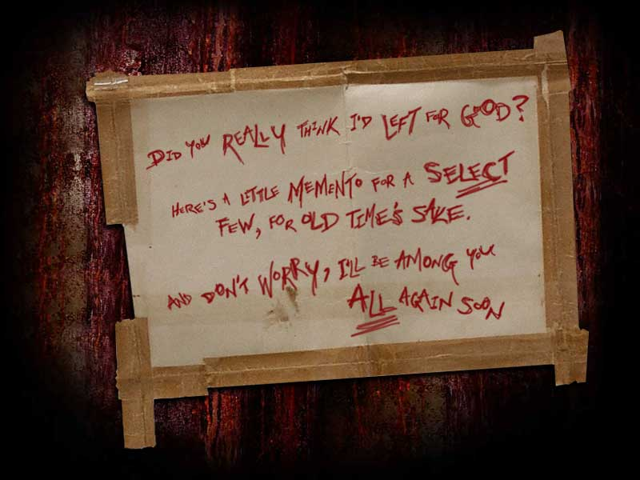

Disclaimer:
The following is a fan-made site dedicated to collecting, archiving, and organizing all aspects of the Why So Serious? alternate reality game ("ARG") produced by 42 Entertainment, LLC for the 2008 Warner Bros. film The Dark Knight. There is no intent to claim intellectual property rights to any original media (i.e. images, photos, videos, audio) displayed anywhere. All images, photos, videos, and audio are featured for informational and entertainment purposes only, and said original media is © their respective owners. There is no intent to infringe upon the copyrights of 42 Entertainment, Warner Bros., DC Comics, or any other holders of copyright on Batman material.
This is an unofficial, non-profit project - the webmaster will not profit from the site nor its contents in any way. The webmaster is not affiliated with 42 Entertainment or Warner Bros., nor is she in any position to know how to procure swag, so please don't bother asking.
This site does not claim to have participated in the creation of the film The Dark Knight, its characters, nor its ARG campaign. The webmaster and other participants are simply dedicated fans of the movie and its ARG campaign, who have worked to organize information from this campaign and in the case of the webmaster, create this site. Much of the site's content is originally from the fan-compiled Dark Knight ARG Wiki at http://batman.wikibruce.com. Aforementioned webmaster did create this website with original content, namely the information architecture and layout, and asks that visitors respect the originality of the work.